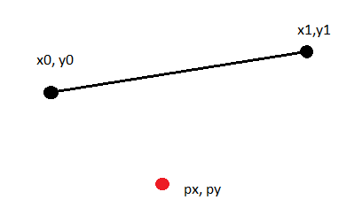

Distance between a point and a line segment.

Parametric equation of line
dx = x1 - x0
dy = y1 - y0
x(t) = x0 + dx * t
y(t) = y0 + dy * t
Distance from (px, py) to point (x(t), y(t)).
+--------------------------------------------
| 2 2
distance = \| (px - (x0 + dx * t)) + (py - (y0 + dy * t))
2 2 2
distance = (px - (x0 + dx * t)) + (py - (y0 + dy * t))
Derive in t, make equal zero to find the minimum ```
0 = 2 * dx * (x0 - px + dx * t) + 2 * dy *(y0 - py + dy * t)
Solve for t
dx * px + dy * py - dx * x0 - dy*y0
t = ------------------------------------ 2 2 dx + dy
dx *(px - x0) + dy * (py - y0)
t = ----------------------------- 2 2 dx + dy
This t will generate the minimum distance
If t >= 0 and t <= 1 then calculate distance from (px, py) to (x(t), y(t))
if (t < 0)
calculate distance from (px, py) to (x0, y0)
if (t > 1)
calculate distance from (px, py) to (x1, y1)
----
```cpp
#include <cmath>
double Distance(double px, double py,
double x0, double y0,
double x1, double y1)
{
const double dx = x1 - x0;
const double dy = y1 - y0;
const double t = (dx * (px - x0) + dy * (py - y0)) / (dx * dx + dy * dy);
if (t <= 0.0)
{
return _hypot(px - x0, py - y0);
}
else if (t >= 1.0)
{
return _hypot(px - x1, py - y1);
}
return _hypot(px - (x0 + dx * t), py - (y0 + dy * t));
}